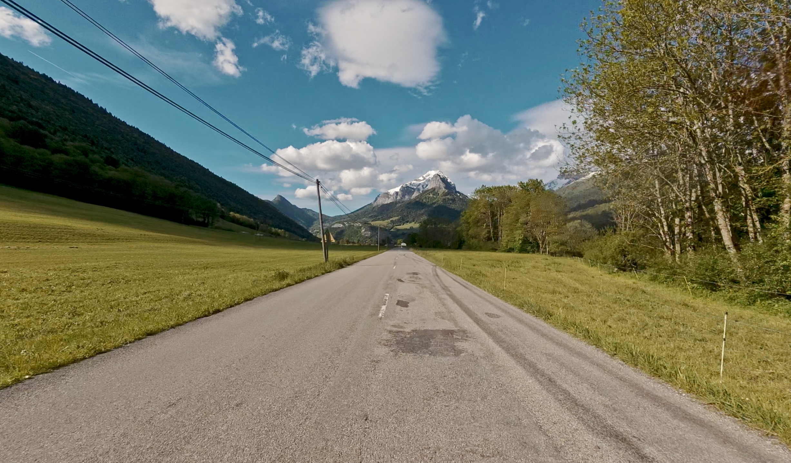
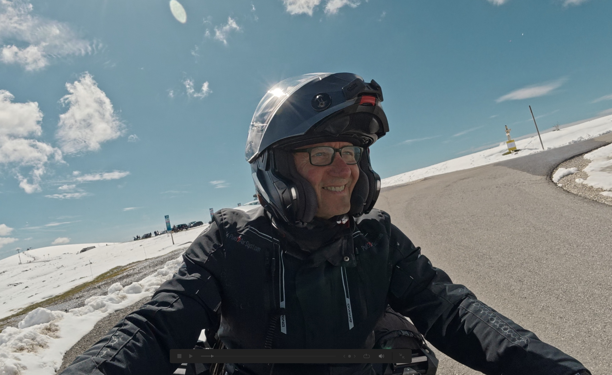
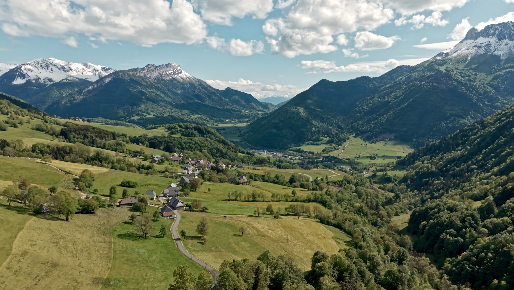

Aujourd'hui, je vous emmène pour une belle balade moto dans le massif des Bauges, entre Savoie et Haute-Savoie. Sortie du 17 mai 2026 — départ vers 16h27, retour vers 18h49. Une balade tranquille, sans se presser, juste pour profiter.

🗺️ L'itinéraire du jour
Quintal → Col du Frêne — Partie 1
📍 Trace GPS — Ouvrir dans Kurviger
La trace complète de la balade, optimisée pour les routes sinueuses des Bauges.
Ouvrir la trace →⛰️ La montée du Semnoz — de la neige en mai
On commence fort avec la montée du Semnoz. En mai, les Rochers Blancs portent encore bien leur nom : la neige est là, les paysages sont saisissants. Ce contraste entre les routes déjà sèches en bas et les alpages encore blancs là-haut, c'est une des choses que j'aime dans les Alpes au printemps.
Au sommet, le panorama est exceptionnel : vue sur les Alpes, le Mont Blanc au loin, les crêtes des Bauges qui s'étirent vers le sud. Difficile de ne pas s'arrêter toutes les cinq minutes.

Certaines routes des Bauges sont étroites et sinueuses, avec parfois des gravillons et un revêtement dégradé par endroits. En altitude, la météo peut changer très vite. Prudence dans les virages — anticipez et adaptez votre vitesse.
🏘️ Le cœur des Bauges — villages et routes de montagne
Après la descente du Semnoz par le col de Leschaux, on entre dans le vrai cœur du massif. C'est un autre monde. Les routes rétrécissent, les villages se succèdent, l'ambiance devient rurale et préservée.
Bellecombe-en-Bauges, Lescheraines, La Motte-en-Bauges — des noms qui sonnent bien et des villages qui tiennent leurs promesses. Maisons savoyardes, fermes, alpages, et tout autour les falaises calcaires typiques du massif. Ces routes-là, on ne les fait pas en mode chrono. On les savoure.

Le Châtelard — chef-lieu des Bauges
Le Châtelard est le chef-lieu du canton des Bauges. Au Moyen Âge, c'était un point stratégique contrôlé par les seigneurs de Miolans. Au XIXe siècle, le village a connu un essor avec l'exploitation de mines de plomb argentifère. Aujourd'hui, c'est un village vivant, point de départ idéal pour explorer le cœur du massif.
La Compôte, Doucy-en-Bauges, Sainte-Reine
En quittant Le Châtelard vers La Compôte, les routes deviennent encore plus tranquilles. Des grangettes en bois, des troupeaux sur les pentes, des vues qui s'ouvrent sur les sommets. À Doucy-en-Bauges, une petite route rurale et des panoramas qui valent largement le détour avant de rejoindre Sainte-Reine et le col du Frêne.
Impossible de traverser les Bauges sans penser à la Tomme des Bauges AOP — un fromage de vache au lait cru, affiné au minimum 5 semaines, au goût subtil de noisette. Elle se reconnaît à sa croûte grisée et à sa saveur franche de montagne. À déguster avec un verre de vin de Savoie.
🏔️ Col du Frêne — panorama final
Le col du Frêne est le point final de cette première partie. À 950 m d'altitude, il offre un panorama remarquable sur la Dent d'Arclusaz, les Alpes et la vallée de Savoie. Un endroit où on pose la moto, on sort le téléphone, et on prend le temps.
Si cette première partie vous plaît, je vous emmènerai bientôt pour la suite dans l'épisode 2.
Date : 17 mai 2026 · Départ : 16h27 · Retour : 18h49
Distance : ~49,5 km · Durée : 2h21
Depuis : Quintal (Haute-Savoie) · Disque : SSD2T WorkDR